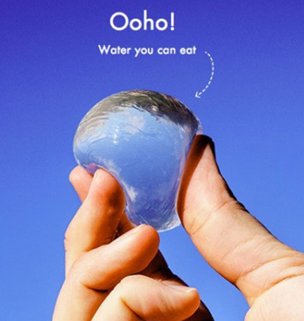

Universally, one million plastic bottles are bought every minute, but less than half of the bottles end up being recycled. So where do the rest go? Sadly, most of the bottles end up in landfills, while others end up in the ocean.

However, a company, “Skipping Rocks Lab”, is on a mission to tackle this very issue: making packaging waste disappear. Ooho!, a biodegradable and edible capsule for water made from seaweed, is the company’s first product, as well as an alternative in replacing plastic water bottle. The company, run by two design engineering students, is located in London. They were successful when promoting it in the London Marathon because many runner participates grabbed the edible water as they went. The organization’s goal is to decrease the number of plastic bottles by 500K from 2018 to 2019.
So how does it work?
Because Ooho! is made entirely out of biodegradable, it is safe for the human body. To drink it, you will need to tear a hole out of the sachets and pour it in your mouth, or you can just consume it whole.
What are the benefits and how does it help?
Ooho! is a “sustainable packaging alternative” to plastic waste. Therefore, we can replace plastic waste like plastic bottles and cups with edible water. The design of Ooho! is meant to decrease the number of disposable waste that end up in the ocean. Also, the production of Ooho! is cheaper than those of plastic and metal. Therefore, if the usage of edible water become more prevalent, we just might be able to resolve the issue of plastic water bottles. However, Ooho is meant to be used on the go, so it wouldn’t be recommended to store it. Also, because of Ooho's natural properties, you will only be able to obtain it in-store where it is made fresh daily.